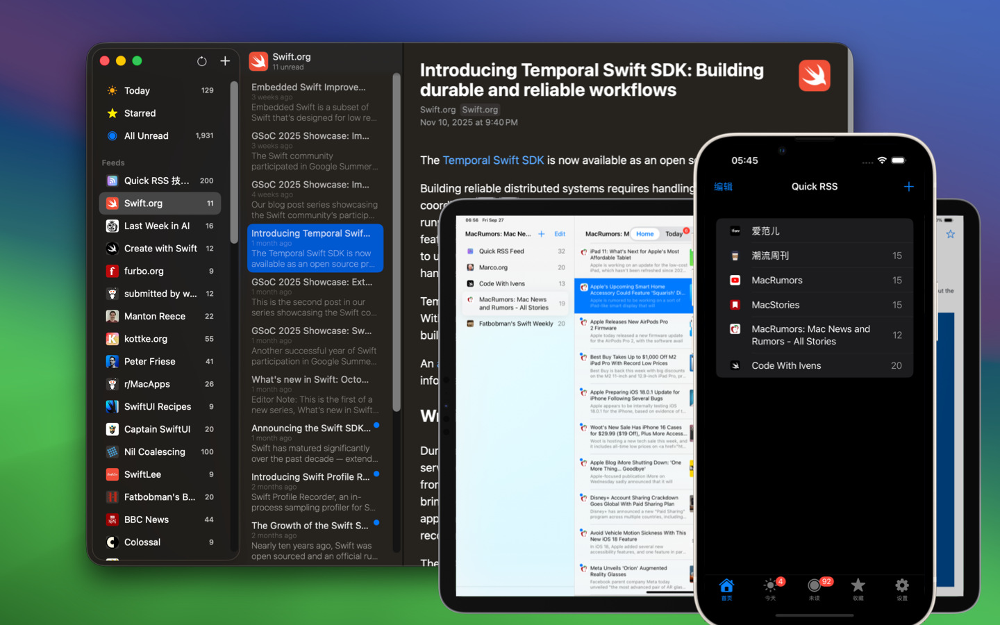
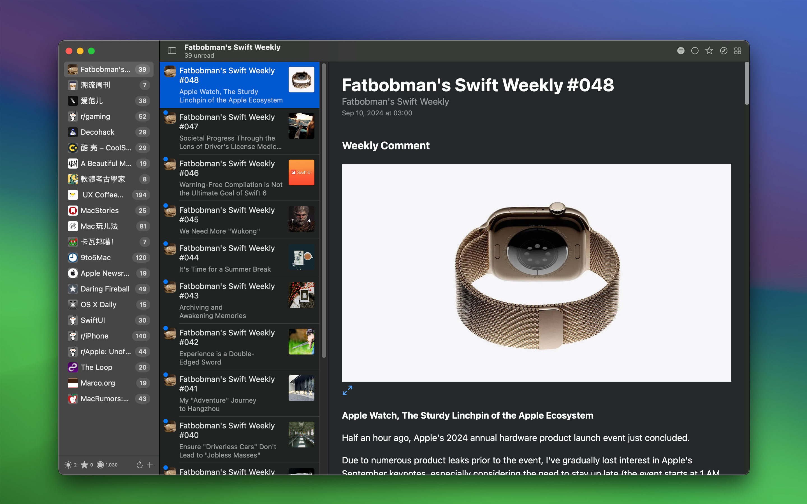
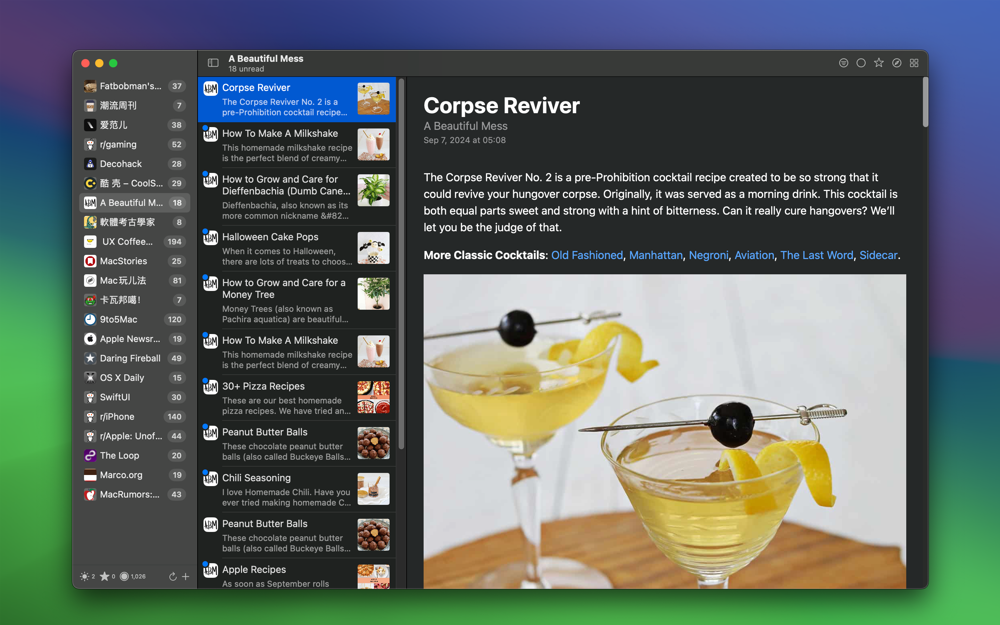
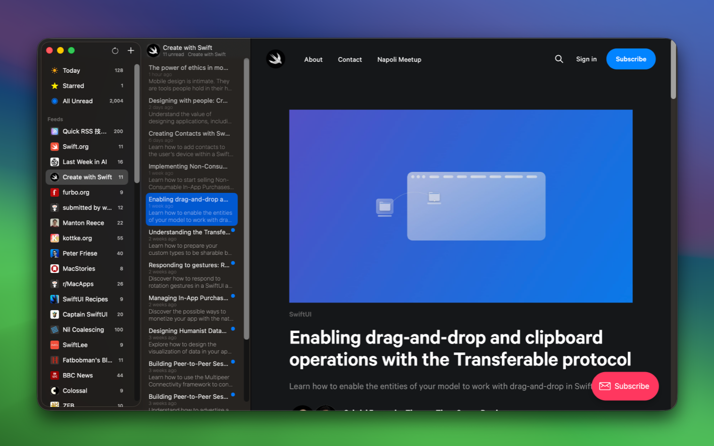
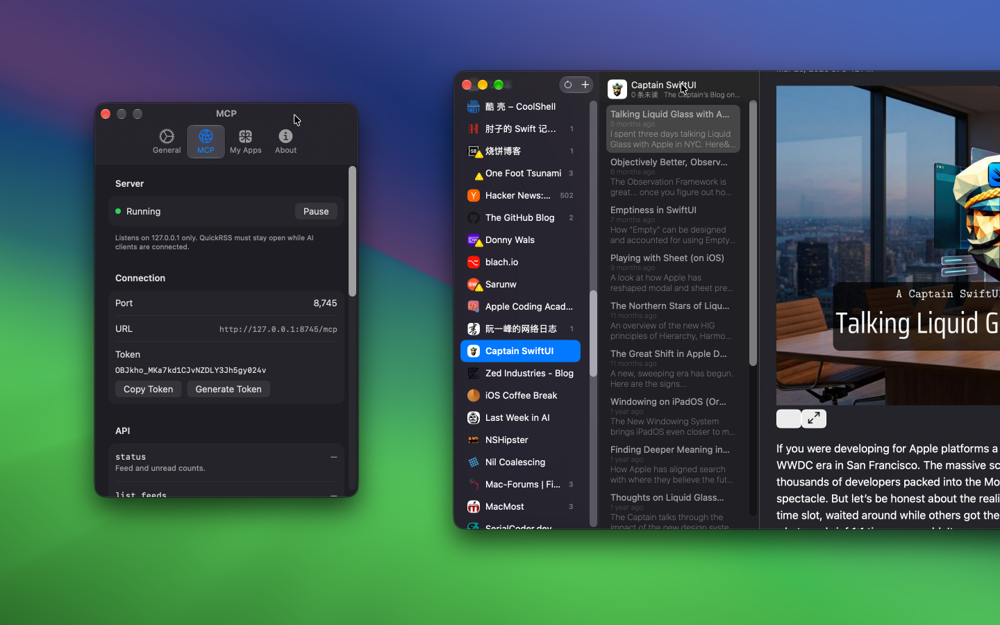

minimum OS requirement: macOS 14.0 / iOS 17.0
Quick RSS is an easy-to-use, private, and intuitive desktop RSS reader. Whether you're a news enthusiast or someone who likes to follow blog posts and headlines, Quick RSS helps you effortlessly manage and read your favorite RSS feeds.




Quick RSS is ideal for anyone looking to efficiently access the latest news, especially for:
Download Quick RSS today and bring a brand new RSS reading experience to your macOS. Whether tracking personal interests or staying on top of industry news, Quick RSS will become your go-to tool for managing subscriptions.

Quick RSS supports the Model Context Protocol (MCP), allowing MCP clients such as Claude Desktop, Cursor, and VS Code to access your subscriptions.
v2.8.0 or later.The MCP service only accesses subscription and article data currently in Quick RSS. Add its configuration only to clients you trust.
Enable the MCP service in Quick RSS Settings, then copy the server address and token shown by the app.
# Add the Quick RSS MCP server
grok mcp add --transport http quickrss "http://127.0.0.1:8745/mcp?token=<TOKEN>"
# Remove the Quick RSS MCP server
grok mcp remove quickrss
# List configured MCP servers
grok mcp list
# Diagnose the Quick RSS MCP server connection
grok mcp doctor quickrss
You can also edit the configuration file directly:
vim ~/.grok/config.toml
Add this configuration, replacing <TOKEN> with the token shown by Quick RSS:
[mcp_servers.quickrss]
url = "http://127.0.0.1:8745/mcp?token=<TOKEN>"
enabled = true
Or:
[mcp_servers.quickrss]
url = "http://127.0.0.1:8745/mcp"
headers = { "Authorization" = "Bearer ${QUICKRSS_MCP_TOKEN}" }
Or:
[mcp_servers.quickrss]
command = "/Applications/QuickRSS.app/Contents/MacOS/QuickRSS"
args = ["--mcp"]
enabled = true
In a Grok conversation with the Quick RSS connector enabled, send:
List the five most recently updated articles in my Quick RSS subscriptions, including each title, feed, and publication date.
You can also enter /mcps in Grok to check whether the MCP server is running.
When the connection succeeds, Grok calls a Quick RSS MCP tool and returns articles from your current subscriptions.
We have curated some high-quality RSS feeds and encourage you to share your favorite subscriptions. Additionally, we have created a Quick RSS Feed to collect and share tech-related content! If you have articles, software, or resources to recommend, feel free to contribute via issue. Your submissions will be automatically added to our RSS feed, enriching the content for the community.
https://wangchujiang.com/quick-rss/feed.xml
https://wangchujiang.com/quick-rss/opml.xml
Here are some recommended RSS feeds. Feel free to share your favorite RSS feeds with us.